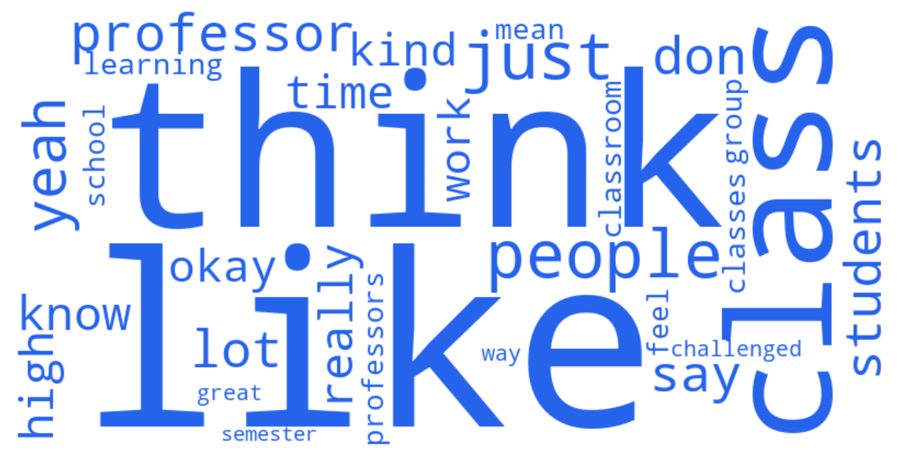

MPP1 Focus Group
79 student turns · Mean sentiment: 0.45
79
Student turns
5590
Total words
0.45
Mean sentiment
Sentiment Arc
Emotional trajectory through the MPP1 focus group session. Hover over points to read actual quotes.
Distinctive Vocabulary

Top Themes
Norm Enforcement & the Rules Gap
"I would definitely be keeping an eye out to see if the professor was treating everyone the same way. If anyone got a pass on this type of behavior, I'd see it much more negatively. Whereas if a profes..."
Academic Rigor: Expectations Met and Unmet
"When it comes to professionalism, I think HKS is very high, in a positive way. When it comes to rigor, I would say it's extremely underwhelming."
Participation Grades vs. Class Size: A Structural Tension
"I think it's an intersection of class size and a huge participation grade. It really incentivizes people to speak for the sake of having their name noted rather than to advance the discussion."
Core Curriculum: Structure, Flexibility, and Program Identity
"When people say get rid of core classes, what they really mean is adjust for different learning levels. A degree has to have core requirements, but more optionality within core, adjusted to learning l..."
Teaching Quality & Faculty Investment
"No, so I think my professional experience was that in an intense environment, you are it's fine to not call people by the names whereas at HKS people are very proactive and professors are very proacti..."
Reading Volume & Workload Sustainability
"Reduce the volume of work. Not necessarily assignments, but the readings. I feel like I'm getting such a surface-level understanding of so much, and I'm not getting a deep understanding of anything."
Student Professionalism & Classroom Culture
"Competitive. And it depends on professor."
Cold Calling
"I like that [NAME] [NAME] does that. I think that that's like, because it's playful. It's not like it removes all of the like anger and attitude from it. Whereas like if I walked in late to a classroo..."
Feedback & Assessment: Timing, Quality, and Accountability
"We will evaluate you. Please do."
Distinctive Keywords
like
think
class
people
just
yeah
don
professor
say
lot
students
know
time
really
high
okay
kind
work
learning
classroom